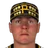

American Baseball League · Depth chart & lineups
Pittsburgh Pirates
← Team page · Payroll · Transactions
Based on games played and started through May 13, 2002. The OOTP export has no saved depth chart or lineup card, so this is derived from real usage. Lineups and depth chart list only players on the active roster now (26 players).
Most common lineups
For each batting-order spot, the active player who started there most often against that kind of starter (each player used once). Starts in spot = games he started in that spot out of the games against that hand. AVG/OBP/SLG: his season line with this club.
vs. right-handed starters 31 games
| # | Player | Pos | Starts in spot | AVG | OBP | SLG |
|---|---|---|---|---|---|---|
| 1 | 2B | 30 of 31 | .320 | .349 | .438 | |
| 2 | LF | 27 of 31 | .370 | .466 | .486 | |
| 3 | Nomar Garciaparra | SS | 26 of 31 | .311 | .352 | .514 |
| 4 | Jay Gibbons | RF | 18 of 31 | .303 | .359 | .576 |
| 5 | Aramis Ramirez | 1B | 18 of 31 | .247 | .300 | .409 |
| 6 | Brian Daubach | DH | 16 of 31 | .286 | .379 | .524 |
| 7 | Dave Berg | 2B | 16 of 31 | .307 | .340 | .445 |
| 8 | Jeff Liefer | CF | 9 of 31 | .179 | .231 | .321 |
| 9 | Dan Wilson | C | 13 of 31 | .347 | .379 | .483 |
vs. left-handed starters 9 games
| # | Player | Pos | Starts in spot | AVG | OBP | SLG |
|---|---|---|---|---|---|---|
| 1 | DH | 8 of 9 | .320 | .349 | .438 | |
| 2 | LF | 7 of 9 | .370 | .466 | .486 | |
| 3 | Nomar Garciaparra | SS | 6 of 9 | .311 | .352 | .514 |
| 4 | Aramis Ramirez | 1B | 7 of 9 | .247 | .300 | .409 |
| 5 | Jay Gibbons | LF | 4 of 9 | .303 | .359 | .576 |
| 6 | Dan Wilson | C | 4 of 9 | .347 | .379 | .483 |
| 7 | Brian Daubach | RF | 4 of 9 | .286 | .379 | .524 |
| 8 | Dave Berg | 2B | 4 of 9 | .307 | .340 | .445 |
| 9 | Jeff Liefer | CF | 5 of 9 | .179 | .231 | .321 |
Depth chart games started by position through May 13
| Pos | Role | Player | GS at pos | G | AVG | OBP | SLG | HR |
|---|---|---|---|---|---|---|---|---|
| C | Starter | Dan Wilson | 31 | 31 | .347 | .379 | .483 | 3 |
| Backup 1 | Raul Casanova | 9 | 12 | .163 | .217 | .279 | 1 | |
| 1B | Starter | Aramis Ramirez | 30 | 39 | .247 | .300 | .409 | 5 |
| Backup 1 | Nomar Garciaparra | 4 | 37 | .311 | .352 | .514 | 6 | |
| Backup 2 | Brian Daubach | 2 | 37 | .286 | .379 | .524 | 7 | |
| Backup 3 | Alan Zinter | 1 | 5 | .500 | .500 | .833 | 1 | |
| 2B | Starter | Dave Berg | 22 | 37 | .307 | .340 | .445 | 3 |
| Backup 1 | 17 | 38 | .320 | .349 | .438 | 5 | ||
| Backup 2 | Adam Riggs | 1 | 23 | .260 | .322 | .364 | 1 | |
| Backup 3 | F.P. Santangelo | 0 | 20 | .260 | .362 | .400 | 2 | |
| 3B | Starter | Adam Riggs | 16 | 23 | .260 | .322 | .364 | 1 |
| Backup 1 | Aramis Ramirez | 7 | 39 | .247 | .300 | .409 | 5 | |
| Backup 2 | Dave Berg | 7 | 37 | .307 | .340 | .445 | 3 | |
| Backup 3 | 5 | 38 | .320 | .349 | .438 | 5 | ||
| SS | Starter | Nomar Garciaparra | 33 | 37 | .311 | .352 | .514 | 6 |
| Backup 1 | Dave Berg | 7 | 37 | .307 | .340 | .445 | 3 | |
| Backup 2 | F.P. Santangelo | 0 | 20 | .260 | .362 | .400 | 2 | |
| LF | Starter | 30 | 37 | .370 | .466 | .486 | 3 | |
| Backup 1 | Jay Gibbons | 8 | 33 | .303 | .359 | .576 | 10 | |
| Backup 2 | Jeff Liefer | 2 | 31 | .179 | .231 | .321 | 4 | |
| Backup 3 | Adam Riggs | 0 | 23 | .260 | .322 | .364 | 1 | |
| CF | Starter | Jeff Liefer | 26 | 31 | .179 | .231 | .321 | 4 |
| Backup 1 | F.P. Santangelo | 8 | 20 | .260 | .362 | .400 | 2 | |
| Backup 2 | 6 | 37 | .370 | .466 | .486 | 3 | ||
| Backup 3 | Adam Riggs | 0 | 23 | .260 | .322 | .364 | 1 | |
| RF | Starter | Jay Gibbons | 24 | 33 | .303 | .359 | .576 | 10 |
| Backup 1 | Brian Daubach | 14 | 37 | .286 | .379 | .524 | 7 | |
| Backup 2 | Jeff Liefer | 1 | 31 | .179 | .231 | .321 | 4 | |
| Backup 3 | Adam Riggs | 1 | 23 | .260 | .322 | .364 | 1 | |
| DH | Starter | Brian Daubach | 17 | 37 | .286 | .379 | .524 | 7 |
| Backup 1 | 16 | 38 | .320 | .349 | .438 | 5 | ||
| Backup 2 | Adam Riggs | 3 | 23 | .260 | .322 | .364 | 1 | |
| Backup 3 | F.P. Santangelo | 1 | 20 | .260 | .362 | .400 | 2 |
Rotation OOTP projected starters (projected_starting_pitchers.csv)
| # | Pitcher | Active | GS | W-L | IP | ERA | WHIP | K |
|---|---|---|---|---|---|---|---|---|
| 1 | Tomo Ohka | Yes | 8 | 3-1 | 48.1 | 5.96 | 1.53 | 34 |
| 2 | Bryan Rekar | Yes | 8 | 3-4 | 49.1 | 5.47 | 1.36 | 24 |
| 3 | Yes | 8 | 3-2 | 51.0 | 4.94 | 1.59 | 28 | |
| 4 | Donovan Osborne | Yes | 7 | 3-1 | 37.2 | 5.97 | 1.65 | 27 |
| 5 | Joel Pineiro | Yes | 9 | 1-7 | 56.0 | 6.27 | 1.66 | 38 |
Bullpen roles from usage: closer = most saves, setup = most holds, long relief = most innings per outing (1.1+ IP)
| Role | Pitcher | Throws | G | SV | HLD | IP | IP/G | ERA | K |
|---|---|---|---|---|---|---|---|---|---|
| Closer | B.J. Ryan | LHP | 15 | 9 | 0 | 14.1 | 1.0 | 3.14 | 17 |
| Setup | Steve Reed | RHP | 11 | 1 | 1 | 10.2 | 1.0 | 5.91 | 7 |
| Setup | Ben Weber | RHP | 10 | 0 | 2 | 20.0 | 2.0 | 3.15 | 17 |
| Long relief | Vic Darensbourg | LHP | 11 | 0 | 1 | 20.2 | 1.9 | 1.74 | 8 |
| Long relief | Kirk Bullinger | RHP | 9 | 1 | 1 | 18.2 | 2.1 | 3.86 | 9 |
| Middle relief |  Donne Wall | RHP | 10 | 0 | 1 | 13.2 | 1.4 | 11.85 | 9 |
| Middle relief | Jim Dougherty | RHP | 8 | 0 | 1 | 14.0 | 1.8 | 7.07 | 7 |
Bench active position players outside the regular lineups
| Player | Pos | G | PA | AVG | OBP | SLG |
|---|---|---|---|---|---|---|
| F.P. Santangelo | CF | 20 | 58 | .260 | .362 | .400 |
| Raul Casanova | C | 12 | 46 | .163 | .217 | .279 |
| Alan Zinter | 1B | 5 | 12 | .500 | .500 | .833 |
| 3B | 5 | 9 | .125 | .222 | .125 |
Injured list
Nobody on the injured list.